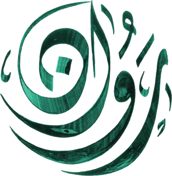
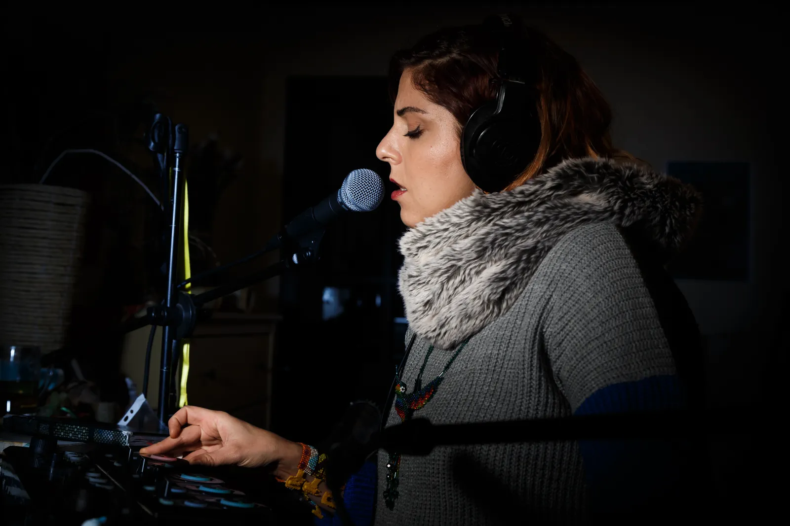

Step one
A consultation
Forty-five minutes to meet, to hear what brings you, to listen to your voice together — and to feel whether the program is right for you now.
A small fee45 min · online or Amman
Book a consultation

The one-on-one program
A one-on-one program of liberation through the voice, and liberation of the voice. Seven sessions of ninety minutes, in person in Amman or online — beginning with a consultation.
She who shakes off shackles offers you the same.
Liberation through the voice. Liberation of the voice.
Welcome to the latest offering by Rawan Roshni: a one-on-one program that consists of seven sessions, ninety minutes each. Each session holds four elements, and space for what emerges moment to moment — with Rawan’s ability as a facilitator to pivot and hold what is true in the present.
The seven sessions are given within a seven-to-fourteen-week period, depending on the pace and schedules of client and practitioner.

It may be for you if
Inside every one of the seven sessions
Focusing on energy centres with specific frequencies and affirmations, through “sounding” practice.
Embodiment practices using sound and movement to deepen into the body: the use of breath, where sound comes from in the body, and where it can be sent.
Journaling, speaking your truth, having your authentic voice be heard and valued.
From singing techniques to songwriting, from musical equipment to leading singing circles, from music arrangement to career consultation, from public speaking to poetry — it depends on your goals.
Before anything else
Take three breaths with her.
Every session begins the same way: arriving in the breath. Touch the circle, and follow it in, and out, three times.
Touch to begin
Step one
Forty-five minutes to meet, to hear what brings you, to listen to your voice together — and to feel whether the program is right for you now.
Step two
Seven sessions of ninety minutes, in person in Amman or online, over seven to fourteen weeks. Paid in full by bank transfer at the beginning of the program. No cash refunds; credit can be kept for a year, for future sessions or other offerings.
Book a time
With Rawan, one-on-one.
Choose the time that suits you best. Rawan replies by email to confirm it, or to offer another, with the fee and the link.
Send the email that just opened, and Rawan will confirm your time.
Voice Liberation is a program of seven sessions, because the voice opens in stages. It always begins with a consultation, where you meet Rawan and decide together whether to continue.
The program is 700 JOD, paid in full by bank transfer at the beginning. There are no cash refunds, but credit can be kept for future sessions or other offerings within a year.
No. Many people come because they believe they cannot. The work begins with breath and sound, not songs.
Both. The seven sessions are given in person in Amman, Jordan, or online — whichever suits you and your schedule.
It is not a replacement for therapy. It is voice and body work that often touches deep places, held with care and experience.
Yes — a consultation gift card is in the store.